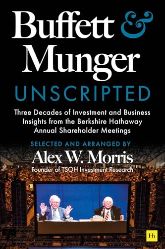

亚历克斯·W·莫里斯（Alex W. Morris）是TSOH Investment Research Service的创始人，持有特许金融分析师（CFA）资格，毕业于佛罗里达大学并取得MBA学位，此前在买方机构担任股票分析师逾十年。《Buffett and Munger Unscripted》于2025年1月由Harriman House出版，历时数年整理完成。莫里斯观看了超过150小时的伯克希尔哈撒韦历年股东大会录像，梳理了自1994年至2024年间股东提问的1700余个问题，将其中最具洞察价值的问答内容按主题归类整理成书，全书共计约475页。本书目前尚无正式中文译本。
全书围绕若干核心主题展开，包括资本配置的艺术、优质企业的判断标准、管理层评估方法、市场先生的本质、长期主义的思维方式，以及两位投资者对各类商业模式和宏观经济问题的实时回应。莫里斯的编辑工作不仅是简单的摘录汇编，他保留了巴菲特和芒格在现场回答时特有的口语风格和即兴思辨——那种在现场压力下仍能条理清晰、坦率直言的表达方式，恰恰是投资者相互传阅会议录音的核心原因。与经过精心打磨的致股东信不同，大会现场问答呈现的是两人更为自然和未经修饰的思维状态，许多重要观点是在被追问时才完整显现的。
克里斯托弗·P·布卢姆斯特兰（Christopher P. Bloomstran），Semper Augustus Investments Group总裁兼首席投资官，评价本书："《Buffett and Munger Unscripted》是任何认真对待商业与投资的人的必读书目，也是极好的参考文献。"（"Buffett and Munger Unscripted is essential reading and a wonderful reference for anyone serious about business and investing."）本书在Goodreads上收获4.55分的评分，The Business Brew主持人比尔·布鲁斯特（Bill Brewster）称之为"浓缩了芒格和巴菲特精华中的精华"。
对于希望系统学习巴菲特和芒格投资思想的读者，本书提供的价值在于它的横向比较维度——通过追踪同一主题在不同年份的问答，读者可以观察到两人思想的演变轨迹，以及他们如何在不同市场环境下坚守或调整自己的核心判断。书中的内容不是结论的罗列，而是思考过程的展示，这使得它比许多二手整理的"巴菲特语录"更接近原始的智识资源。莫里斯的整理工作本身也体现了一种研究者的诚实：他明确指出部分观点在不同年份的问答中存在微妙差异，而非刻意制造前后一致的"系统"。